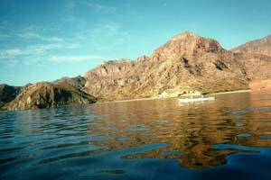

We're not breaking camp today, but rather circumnavigating the island to explore the northern end. Danzante is nearly four miles long, but very narrow. There had been a slight wind and swell yesterday, but the sea was glassy when we put in. Our boat hummed and vibrated through clean strokes.

On the other side of the island, the pelicans were flocking and diving. Tom suspected there were schools of fish, and began trolling a line behind his kayak. He immediately pulled in a beautiful Sierra (only a quarter of the size of the one he lost, of course). Later, he would fry it with tomatoes and serve it with avocado for dinner.
As we paddled on, we could see the water's surface churning ahead. When we approached, the water was boiling with fish being driven from deep below by predators. The birds were diving frantically and the sea was thriving with life and death.
We stopped for lunch and as we finished, I noticed almost unconsciously that we were holding down our towels and chairs with rocks. The wind was coming up and whitecaps were forming on the water. Tom and Martin decided we should make a run to camp, and by the time we were offshore, swells were rolling over the deck of our kayak. We paddled around the island's northern point and turned into a stiff wind. Leslie and I were still carrying a hull full of vegetables and our boat drove through the churning waves. We leaned in and dug hard through the water with our paddles. I watched our plodding progress against the coastline, setting goals by the frequent points and coves we passed. The wind pushed us constantly and I could feel a small panic building in my gut as the occasional gust would stop us dead and even force us backwards in the water. Finally, after three hours of struggle, we pulled up onshore at camp. I laid on my back in the sand, arms and chest burning, feeling the swell continue to rock me inside.
That night, we drank warm margaritas and marveled at the bright, burning comet in the northwest sky.